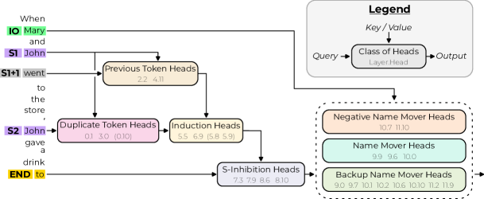

发展脉络
可解释性从 attention 可视化、探针发展到因果干预、激活 patching、稀疏自编码器和电路分析。
模型会「说」，但它在「想」什么？机制可解释性试图从神经元、层与注意力的层面回答这个问题。这一页覆盖四大主力方法——探针、logit lens、激活修补、归因——并直面一个尖锐问题：模型输出的思维链，真的是它推理的真实过程吗？
可解释性方法都围绕同一件事：「干预 + 观察」——改变模型内部的某个部分，看输出怎么变。探针从表示里「读」信息，logit lens 看中间层「想说什么」，激活修补「拔掉」怀疑的组件，归因给每个组件算贡献度。
探针（Probing）的思路：在模型某一层的隐状态上，训练一个轻量分类器去预测某个属性（如「这个 token 是不是动词」「这个句子情感是正是负」）。如果探针能高精度预测，说明该信息「线性可读地」存在于这一层。
import torch
import torch.nn as nn
class LinearProbe(nn.Module):
"""线性探针：在隐状态上预测属性"""
def __init__(self, hidden_size, num_labels):
super().__init__()
self.classifier = nn.Linear(hidden_size, num_labels)
def forward(self, hidden_states):
# hidden_states: [batch, seq, hidden]
# 取 [CLS] 或最后一个 token 的表示
pooled = hidden_states[:, -1, :] # [batch, hidden]
return self.classifier(pooled)
def train_probe(hidden_loader, epochs=10, lr=1e-3):
"""在固定隐状态上训练探针（模型权重冻结）"""
probe = LinearProbe(hidden_size=4096, num_labels=2)
opt = torch.optim.AdamW(probe.parameters(), lr=lr)
criterion = nn.CrossEntropyLoss()
for epoch in range(epochs):
for hidden, labels in hidden_loader:
logits = probe(hidden)
loss = criterion(logits, labels)
opt.zero_grad()
loss.backward()
opt.step()
print(f"epoch {epoch} done")
return probe
# 注意：探针的高精度只能说明「信息可读」，
# 不能说明「模型推理真的用了它」——需要激活修补验证logit lens 是「穷人版可解释性」：把模型某一中间层的隐状态，直接乘上输出投影矩阵（和未嵌入层），映射回词表，看这层「此刻最想说的词」。无需训练，一行代码就能跑。
它揭示的典型现象：早期层倾向于输出「词汇性」的词（当前 token 的延续），深层才逐渐聚焦「语义性」的目标词。局限：未归一化时读数有偏；对某些架构（如规范化策略不同）需要「调 lens」才稳定。作为直觉工具，它在「层数 → 语义渐显」的科普演示上性价比极高。
很多人第一次跑 logit lens 会困惑：为什么第 2 层的输出词表分布看起来那么「无意义」？其实这个现象背后是 Transformer 的信息流设计。要理解它，先记住一个关键点：低层残差流里的信息，大多是「词汇层面」的——token 的嵌入信息、位置信息、前一两个词的上下文。把这种表示投影回词表，自然得到「当前词的延续」或者「常见搭配」，比如输入是「法国的首都是」，第 2 层 lens 看到的高概率词可能是「的」「巴黎」这类局部搭配，而不是「巴黎」这个最终答案。
随着层数加深，注意力头开始跨 token 搬运语义信息，残差流里的「语义成分」占比逐渐上升。到第 10 层左右，logit lens 读出的词汇分布会明显向正确答案集中——模型「已经想好了」答案，后面的层只是在巩固这个决策。这就是「语义渐显」（growing into the answer）现象。用一个形象的比喻：低层像在「数笔画」，高层像在「读语义」，而 logit lens 就是每隔一层架一台摄像头，看模型在哪个深度「决定了答案」。这对排查「模型为什么答错」很有用：如果某个错误答案在很浅的层就锁定了，那可能是输入理解的问题；如果错误答案只在最后一层才出现，那更像输出层决策的问题。
实操上 logit lens 的用法很朴素：取一个「法国首都是哪个城市？」的 prompt，对每个中间层的残差流做 unembed，记录每层概率最高的 5 个词，把它们按层数排成一张表。你会看到典型的四阶段：第 1-3 层的高频词是「是」「的」「城市」这类语法词；第 4-7 层开始出现「巴黎」「里昂」等候选城市；第 8-10 层「巴黎」的排名逐步上升并稳定在第一位；最后 1-2 层基本不再变化。这张表比任何指标都直观地展示了「答案在模型内部第几层确定」。它也是验证「深层才是语义决策区」假设的零成本实验——不需要训练任何探针，只要一次前向和若干次矩阵乘法。局限同样明显：读到 ≠ 用到，lens 显示的分布只代表「残差流此刻能映射出什么」，不代表模型的决策路径真的经过这里。要验证因果，仍然需要激活修补。
激活修补（Activation Patching）回答「哪个组件是因果必需的」：选一批「干净」样本和「污染」样本（如答案正确的 vs 答案错误的同类问题），做三步：
归因方法的目标：给定「输入 → 输出」，量化每个组件（token、层、注意力头）对结果的贡献。与激活修补的「逐个试」不同，归因是「一次算完」。
| 归因方法 | 原理 | 优点 | 缺点 |
|---|---|---|---|
| 梯度归因 | 输出对输入的梯度 | 实现简单 | 梯度不代表真实因果 |
| 积分梯度 | 从基线到输入的梯度积分 | 满足公理（完备性） | 计算成本高 |
| 注意力权重 | 用注意力分数当贡献 | 现成、便宜 | 注意力 ≠ 因果（经典误区） |
| 路径归因 | 结合激活修补的路径分解 | 因果性强 | 组合爆炸 |
特别注意：注意力权重 ≠ 因果贡献——这是可解释性领域最常被误解的点。注意力分数高只说明「这个 token 被关注」，不代表「它导致了输出」。要确认因果，必须用激活修补或路径归因。
「思维链」表面上是模型展示推理过程，但机制研究提出了一个尖锐问题：模型输出的思维链，是否忠实反映它的真实计算过程？答案比直觉复杂得多。
机制可解释性的方法已经形成完整谱系，从「相关性」到「因果性」层层递进。选对工具能事半功倍：
| 工具 | 能力 | 适用阶段 |
|---|---|---|
| TransformerLens | 残差流 hook、激活捕获、路径修补 | 因果分析 |
| SAELens | SAE 训练、特征检索 | 特征分解 |
| Neuronpedia | 特征可视化浏览器 | 特征探索 |
| Captum / 自研 | 积分梯度等归因 | 贡献计算 |
把前面的方法串起来，看一个真实研究场景——间接宾语识别（Indirect Object Identification，IOI）。输入是「当 Mary 和 John 走进房间，John 递给她一个苹果，她把苹果放在桌上」这类句子，任务预测「她」指谁。这个看似简单的指代消解，在 GPT-2 small 里是一条可以被完整复现的电路，也是可解释性社区最经典的演示案例。
这条电路长什么样？下面这张论文原图就是答案。它来自可解释性领域引用率最高的论文之一《Interpretability in the Wild》，整张图画的就是 GPT-2 small 内部实现 IOI 任务的完整因果路径。新手读它，重点不是记住某个头的编号，而是感受"整条因果链可以被完整画出来"这件事本身。

逐块读这张图。按论文图注，左侧是输入 token，它们进入残差流（residual stream）——那条贯穿所有层的信息主干道；中间每个节点是一个注意力头，通常标着"层.头"编号（比如 9.6 表示第 9 层第 6 个头）；箭头表示信息搬运，图注特别说明 query 和 output 箭头标出每个头从哪些残差流读取、往哪些残差流写入。论文把整条电路拆成几个功能组件：负责把主语 token 复制到后续位置的重复 token 头（duplicate token head）、把"人名"信息从主语位置搬运到预测位置的名称搬运头（name mover head），以及配合它们完成去歧义的抑制头。整条电路大约涉及十几个关键头，跨越多层，但每一层各自负责一段可描述的搬运。
读懂这张图的关键是分清它和"注意力热力图"的本质区别：热力图只显示"模型关注了哪里"（相关性），这张图里每条边都经过激活修补验证——把某个头替换掉，模型就答错或转向错误的指代。也就是说，它不是"看起来像"的示意图，而是"删掉就坏"的因果地图。这正是机制可解释性区别于行为观察的核心：产出不是漂亮的可视化，而是一组可复现、可干预、可验证的因果连接。下面第一步到第四步的走查，就是把这张图"从发现到验证"的实现过程。
第一步用探针或 logit lens 粗定位。对「她」这个 token 的隐状态做 logit lens，会发现第 7-10 层的表示已经开始聚焦到「Mary」上——模型在深层之前就把指代对象确定下来了。这给出一个假设：核心决策发生在中后层，而不是输出层。第二步用激活修补验证。构造两个输入：干净的「……John 递给她……」，污染版把「Mary」和「John」对调成「……John 递给 John……」（通过改主语制造矛盾）。把干净输入在某一层的激活替换进污染输入，如果输出恢复到「Mary」，说明该层承载了关键信息。逐层扫描 12 层，会得到一条「因果重要性曲线」，峰值集中在第 8-10 层。
第三步缩小到注意力头。GPT-2 small 每层 12 个头，对全部 144 个头做一遍激活修补，会发现真正起作用的只有几个——比如第 9 层第 6 个头负责「把主语的表示复制到宾语位置」。这个发现如果只用注意力权重可视化，是看不出来的：注意力分数最高的头未必是因果上最关键的，必须靠替换实验来判定。第四步把结果画成电路图：从「主语 token 的表示」→「第 9 层的复制头」→「第 10 层整合」→「输出指代 Mary」，一条三层的小电路就浮出水面了。
这个算例的工程启示是：激活修补把「感觉某层重要」变成了「可复现的因果证据」。每做一次修补就是一次模型前向，一个 12 层小模型全量扫描几百次前向就能完成，成本完全可控。这也是为什么 IOI 电路能成为社区标杆——方法轻量、结论可验证、任何人都能复现。真正大规模生产模型的电路分析，只是把同样思路放大几百倍，本质没有变化。
下面代码演示激活修补的核心三行逻辑：记录干净激活 → 跑污染前向 → 在目标层替换。运行在 1 亿参数的小模型上毫秒级完成，是理解因果性的最快入门方式。
from transformer_lens import HookedTransformer
model = HookedTransformer.from_pretrained("gpt2-small")
def run_with_activation(clean_tokens, corrupt_tokens, layer, metric_fn):
"""把 clean 在第 layer 层的激活，替换进 corrupt 的前向"""
cache = {}
def record(activations, hook):
cache["clean"] = activations
return activations
def patch(activations, hook):
return cache["clean"] # 覆盖为干净激活
# 只 patch 特定 token 时用 cache["clean"] * mask + activations * (1-mask)
# 1. 干净样本前向，记录第 layer 层激活
model.run_with_hooks(
clean_tokens, fwd_hooks=[(f"blocks.{layer}.hook_resid_post", record)]
)
# 2. 污染样本前向，把干净激活替换进去
with model.hooks(fwd_hooks=[(f"blocks.{layer}.hook_resid_post", patch)]):
logits = model(corrupt_tokens)
return metric_fn(logits)
# 用法：逐层调用，对比「替换后输出是否恢复正确」，
# 就能画出每层对正确输出的因果贡献曲线。注意：真实研究里要区分替换整层残差流、还是只替换特定头或特定 token，还要多次采样排除噪声。但最小骨架就是「记录 + 覆盖 + 观察」这三步，其余都是工程细节。
坑 1：在闭源 API 模型上做因果分析。激活修补需要自由读写中间层的残差流，闭源模型只给你 logits 和 token 概率，拿不到隐藏状态——因果类方法直接报废，只能退到黑盒行为分析。想上机制分析，先确认你拿得到权重。
坑 2：用注意力分数代替因果证据。注意力权重是相关性，不是贡献。一个头分数高可能只是在"看"而没在"用"，证明因果唯一可靠的方式是激活修补——替换它，看输出变不变。
坑 3：单样本归因图当普适结论。一次前向的梯度热力图、注意力图都是"单样本产物"，换个句子结论可能完全不同。一个电路要在几百上千条样本上稳定出现，才值得写进报告。
坑 4：探针精度高就当"模型在用"。探针能读出来只说明信息"线性可读地存在"，不代表推理路径真的经过它。文献里有"探针能读、但激活修补证明无关"的反例——两句话必须分开说。
坑 5：把 GPT-2 small 上的电路结论直接外推到 70B。规模变大后内部机制可能重组，小模型验证过的电路在大模型上不一定原样存在。外推要有证据，而不是默认成立——这正是可解释性结论经常"换模型就复现不了"的原因之一。
激活修补精确但慢，归因快但相关性偏多。实际项目里选哪种，取决于你要回答的问题和手里的算力。下面这张决策表可以直接照着用。
| 问题 | 首选方法 | 为什么 | 注意点 |
|---|---|---|---|
| 哪个注意力头负责某个行为 | 激活修补（逐头替换） | 因果结论，直接判定必需性 | 头数多时全量扫描成本高 |
| 哪个 token 对输出贡献最大 | 积分梯度 | 一次算完，满足完备性公理 | 梯度≠因果，需二次验证 |
| 快速给全部层位排个重要性序 | logit lens / 激活差异 | 零成本，秒出直觉 | 只有相关性，别当结论 |
| 特征级别的贡献（配合 SAE） | 特征归因 | 直接落到可解释单元上 | 依赖 SAE 质量 |
| 一句话：只想快速找嫌疑组件 | 归因粗筛 → 修补验证 | 快慢结合，兼顾效率与可信度 | 顺序不能反 |
业界公认的标准流程是「两段式」：先用便宜的归因方法粗筛出嫌疑组件列表，再用激活修补对候选组件逐一做因果验证。跳过粗筛直接全量修补，在小模型上还能忍，在 70B 模型上每多一次全量前向都是真金白银；跳过验证直接用归因结论，则会把「注意力高」这类相关信号误当成因果结论。两条路都有代价，两段式是工程上唯一站得住的组合。
方法本身没有错，但方法被误用很常见。这一节梳理三个最典型的误用，帮助你在使用和阅读可解释性结论时保持清醒。
误用一：把「探针能读到」直接说成「模型在用」。探针高精度只能说明信息「线性可读地」存在于表示里。但模型推理时可能根本没走这条路——信息躺在那里，不代表决策用到了它。经典的「反向案例」是：在部分任务上，用探针能高精度预测某个属性，但激活修补显示该层的这个方向对输出毫无影响。正确表述是「该信息可读地编码在 X 层」，而不是「模型用 X 层来推理」。任何可解释性报告，只要把这两句话混为一谈，就该打问号。
误用二：拿单个样本的归因图当普适结论。梯度归因、注意力热力图都是「单样本」产物——换一个句子，贡献排名可能完全改变。很多「注意力可视化」文章展示一张漂亮的图，配上「模型关注到了正确的词」的解读，但那张图只是几万个样本里的一个。要得出可靠结论，必须跨样本统计：同一电路在 1000 条样本上是否稳定出现？换个措辞、换个人名，电路还在吗？只有跨样本稳定的结构才值得写进结论。
误用三：把相关性观察当安全保证。这是最危险的误用。看到「某个注意力头专门负责安全检查」，就宣称「模型行为可解释、可放心部署」——注意力权重只是相关性，它不代表模型真的依赖该头做安全决策。真正的安全监控需要因果层面的工具（激活修补、SAE 特征干预），并且要在生产分布上验证。相关性的可解释性结论，只能作为「提出假设」的证据，不能作为「决策依据」。
一句话总结边界：相关性方法负责「发现线索」，因果方法负责「验证结论」。把两套方法的作用范围搞清楚，你就能既快速推进工作，又不被单样本的相关性结论误导。
机制可解释性不是学术象牙塔，近两年已经在工程里找到三个务实的落地点。第一个是故障诊断：线上模型某个能力突然退化，与其盲试新数据，不如用激活修补快速定位「哪一层的哪个组件对输出贡献显著下降」。比如某个模型在长文本摘要上变差，logit lens 会显示深层仍然聚焦正确主题，但注意力复制头（负责把关键信息搬运到输出位置）在长上下文下的激活强度骤降——这就是「能力退化发生在注意力头」的直接证据，修复方向立刻明确。
第二个是对齐与安全监控：虽然用 SAE 特征做生产级监控还太早，但用激活修补定位「触发有害行为的关键组件」，从而设计针对性干预，已经是安全团队在探索的方向。第三个是模型选型与采购决策：两个模型在基准上分数接近时，机制层面的对比能提供额外信息——比如模型 A 的推理能力更依赖特定层的「语义整合」电路，模型 B 则更多靠浅层模式匹配；如果你的业务需要复杂推理，机制证据会倾向选择前者。三个场景的共同点是：可解释性不直接给出「最优解」，但它能把「试错」变成「有依据的定位」，把调试时间从数周压缩到数天。
落地时的现实约束也值得提前知道：机制分析需要能自由访问模型权重和中间激活，这决定了闭源 API 模型几乎无法做因果分析——你只能拿到 logits 和 token 概率，拿不到残差流。如果你要评估一个闭源模型，可解释性的选项只剩「行为学」那一侧：设计输入扰动、看输出变化，本质上是在模型外围做黑盒归因。真正想要机制层面的透明度，现阶段只能依赖开源模型。这个约束会影响团队的选型决策：对安全敏感、需要深度审计的场景，开源权重几乎是机制可解释性的先决条件。
还有一个常见的入门问题：这么多方法，先学哪个？建议的顺序是 logit lens 起步（零成本建立「层与语义」的直觉）→ 线性探针（学会从表示里读信息）→ 激活修补（学会验证因果）→ 路径归因（处理更细粒度的信息流）。每一步都建立在前一步之上，而且每一步都能在开源小模型上几分钟内跑通。如果只是想快速上手体验，用 Hugging Face 的 transformers 加载一个 1 亿参数的模型，配 TransformerLens 的教程跑一遍 IOI 复现，一天内就能对整条方法链有完整感受。
| 方向 | 进展 | 未解问题 |
|---|---|---|
| 特征分解（SAE） | 大规模特征提取成功 | 特征是否稳定、是否真实 |
| 电路级理解 | 少量电路被完整复现 | 能否扩展到全模型 |
| 思维链忠实性 | 多篇研究正反证据 | 什么条件下忠实 |
| 可解释性应用 | 安全监控、故障诊断探索 | 能否用于生产 |
本章讨论如何知道模型是否真的变好了：基准设计、任务级评测、污染检测、幻觉分析和可解释性工具。
阅读提示：分数不是结论；必须同时报告任务定义、数据来源、污染风险、统计不确定性和人工/自动评审的边界。
将准确性、鲁棒性、偏见、毒性和效率放在统一评测框架中，适合作为基准设计总览。
MMLU 的任务构成和多学科知识评估方式，帮助理解基准覆盖范围与局限。
大规模多任务基准及其涌现曲线，适合讨论任务选择和能力分布。
用对抗式问题测量模型复述常见错误信念的倾向，是幻觉与真实性章节的重要对照。
开放的模型评测框架，支持任务、评分器、沙箱和轨迹记录，适合搭建可复现实验。
资料优先选用原始论文、官方文档、大学课程和公共机构材料；链接按 2026-08-10 检索，具体版本以来源页面为准。
可解释性从 attention 可视化、探针发展到因果干预、激活 patching、稀疏自编码器和电路分析。
相关性观察不能证明机制；需要通过 ablation、patching 或受控激活验证特征对输出的因果贡献。
细粒度分析成本高且结论常依赖模型与提示；易读可视化可能掩盖多义特征和分布外失效。
大规模 SAE、自动电路发现和行为-机制对齐仍在快速发展，稳定性与可复现性是关键。